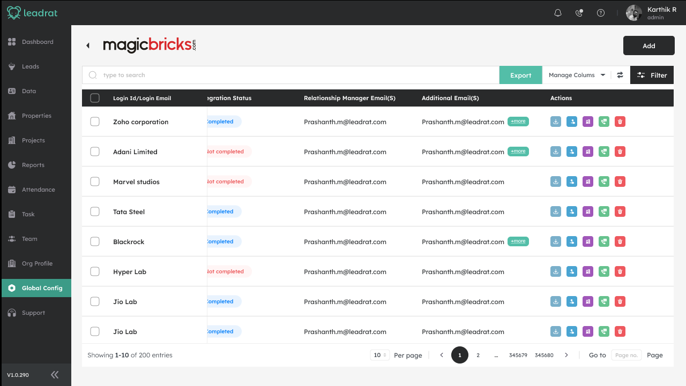

01 / System
- Found in
- Leadrat CRM, global config
- Role
- Sole product designer
- With
- PM, backend engineer, QA, sales-ops
- Scale
- 30–100 agents, 100–500 leads a day per org
- Tools
- Figma, FigJam, Jira
- Status
- Spec through dev handoff NEEDS REAL INPUT: shipped? when?
The algorithm that decides who gets the next lead.
Leadrat is the CRM real-estate brokerages run their sales on. Leads land from portals like MagicBricks and 99acres, and hundreds of times a day the system makes one quiet decision: which agent gets this one. I was asked for a settings screen. What I ended up designing was a way to make a mathematical guarantee legible to the person setting it up.
The system first. The screen comes last.
Or skip to the screen ↓01.1
The requestWho gets this lead?
The actual questionHow should leads from this context be distributed, fairly, without knowing how many will come?
Two requirements arrived together: a percentage-quota algorithm, and a global configuration screen to drive it and its round-robin sibling. Opening an integration's config showed a bare list: which login was connected, whether the sync had finished, who the relationship manager was. Nothing connected "here's an integration" to "here's how its leads split across my team". That logic didn't exist as a product surface yet.
Once assignment became a property of a context (a team, a project, a property) instead of a one-off decision, the gaps were easy to name.
- No weighting
A brokerage that agreed a 50/30/20 split had nowhere to write it down. Everyone got 1-in-N.
- No drift signal
Nobody could tell mid-morning whether an agent was ahead of or behind their share. You counted at day's end.
- Four paths
By user, team, project and property were four mental models. A multi-project brokerage set up the same logic four times.
- No trail
When a quota changed, nothing recorded who or when. That matters the day an agent asks why their count dropped.
01.2
Five parts. Only some of them have pixels.
Read the same chain through different lenses. Each one is a question I had to answer before any screen made sense.
- 1LEAD
- 2RULES
- 3ASSIGNMENT
- 4DEFICIT
- 5AGENT
Expected(agent) = share% × leads so far
Deficit(agent) = Expected − Actual
Next lead → highest positive deficit
Tie → fewer total assignments so far // then alphabetical, per spec
01.3
Try to break it. It should correct itself.
This is the same class of problem as sharing out parliamentary seats fairly before the final vote count is known. I adapted the largest-remainder idea to leads: on every lead, work out what each agent should have by now and give it to whoever is furthest behind.
Step through the spec's own example. Then change the split halfway through and watch what does and doesn't move.
Apply stays locked until the total reads exactly 100. It's the same rule as Save on the real screen.
- Nothing assigned yet. The first lead always goes to the largest share. That matches intuition even at n = 1.
01.4
Then the screen. The visible layer of all that.
The interface ended up small: two radio groups, a list of people and one number that has to read 100. The work was deciding which parts of the system deserved a pixel, and in what order an admin should meet them.

Before this, the row led nowhere. Now it opens the rules for that integration's leads.
| User | Team | Proj. | Prop. | |
|---|---|---|---|---|
| Seq. | ||||
| Pct. |
Base first, then type (decision 01). Same panel for all four types, because all four resolve to a list of people (decision 02).
- 1Assignment base. Which idea of fairness: rotation or quota. → RULES
- 2Assignment type. User, team, project or property. One panel for all four. → RULES
- 3The share fields. The only place the deficit engine has a face. → DEFICIT
- 4Lead rotation. Shift-based rotation within the team, off by default. → RULES
- 5Save & Assign. Mock data: six agents at 20% is 120%. Under the spec, this button is locked until the total reads 100. → THE LOCK
- —Not on this screen: assignment itself, and the audit trail. The most important step has no interface. → ASSIGNMENT
01.5
Six calls, and what each one cost.
D01Base before typeOne "type" dropdown with % fields bolted on for the percentage caseOne extra click for simple round-robin, every time
Sequential and percentage aren't two versions of one form. They're two different ideas of fairness. Asking "which idea?" first, then "assigned to what?", matches how an admin actually thinks about it.
D02Four types, one shapeFour separate flows, since each pulls from a different data sourceThe panel has to adapt per type without becoming four screens in one
All four resolve to the same thing underneath: a list of people. One shared "selected" panel, with a light tag ("Aamor project") only where it adds information, let one screen replace four.
D03Running total always visible. Save locked.Validate on Save, then an error toastA disabled Save reads as "broken" unless the gap to 100 is spelled out
The requirement was real-time feedback, not a post-submit error. The sum sits next to the inputs at all times, and an invalid split can never reach the assignment engine, even for a second.
D04Additional config as its own tabTwo more checkboxes on the main panelAn admin who does want duplicates finds them one tab away
Once duplicate handling needed its own owner list, its own sequencing toggle and its own selected-users view, it had the weight of a second decision, not a footnote to the first.
D05"Same as primary" on by defaultBlank owner dropdowns to fill every timeAn org that wants a separate duplicate team has to notice and uncheck it
Most orgs want the same person handling a duplicate as handles the original lead. The default makes the common case zero extra clicks.
D06Break ties on assignment count, not randomnessAlphabetical order, or a round-robin cycle. Both named in the spec.More state to track per agent
Every assignment is logged and can be questioned later, so I picked the tie-break that is also an answer you can give out loud. At lead 5, A and B both sit at +0.5; B gets it for having 1 lead against A's 2. An admin can explain that in one sentence. Alphabetical order can't be explained that way. You watched it happen in 01.3.
I presented this log to stakeholders and revised D03 and D05 after that review. NEEDS REAL INPUT: what changed in D03 and D05?
01.6
What I can claim, and what I can't yet.
Measured
Nothing from a live account yet.
NEEDS REAL INPUT: any post-launch data?
Validated
In simulation, not production. The spec's 50/30/20 example lands at exactly 5/3/2 by lead 10, with no rounding drift. This was the acceptance bar agreed with engineering before the interaction spec, and I ran it by hand before handoff.
Every base × type combination designed and checked before handoff, not only the happy path.
Design target
An invalid split never reaches the engine.
Four assignment contexts in one configuration.
A quota change mid-day only steers future leads.
Hypothesis
Fewer manual reassignment tickets.
Faster setup of a new integration.
Agents see assignment as fair.
Admins set up duplicates second, not first. That's why it lives in a tab.
01.7
Designing the interface was the easy half. The hard half was making a guarantee legible: showing an admin that a system with no idea of today's total is still converging.
- What I'd change
The tie-break is fair but invisible. An agent can't see why they were skipped. A "why this agent" trace, built from the audit log that already exists, is the next real iteration.
- What I'd test
Putting duplicates behind a tab was a bet. I'd sit in on a handful of first-time setups to confirm it instead of assuming it from the requirements.
- Where engineering changed the design
Two leads in the same millisecond can't both read a stale count. Locking isn't a UI decision, but it changes what the UI is allowed to promise. Getting that early kept "applies immediately" honest.
My part
- Turned two user stories and their acceptance criteria into one interaction model instead of two screens.
- Pinned down the deficit formula, the tie-break and the concurrency behaviour with a backend engineer.
- Defined the audit-log data model end to end: who, when, what changed.
- Ran the algorithm by hand against the 10-lead example before a line of code existed.